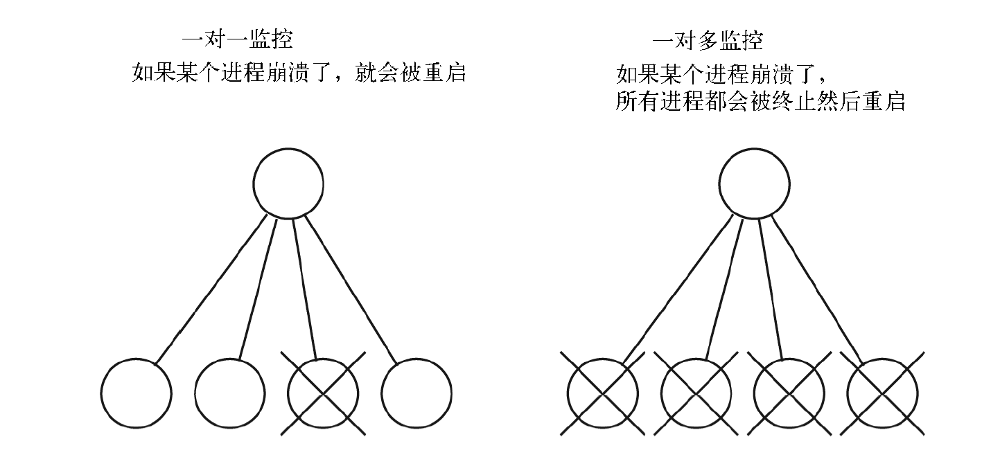

OTP应用系统
Table of Contents
这一章将构建一个系统,把它作为一家网络公司的后端,这家公司销售两种商品:质数和面积
顾客可以从这里购买质数,也可以请我们计算某个几何对象的面积
将编写两个服务器:一个生成质数,另一个计算面积。并使用上一章讨论的 gen_server 框架来实现它们
在构建系统时必须考虑到错误，即使彻底测试了软件,也不一定能捕获所有的bug 假设其中一个服务器带有会导致服务器崩溃的致命错误，确切地说,故意引入一个错误来使其中一个服务器崩溃
当服务器崩溃时,需要一种机制来检测这种情况并重启它,为此将用到 监控树 (supervision tree)这个概念。创建一个监控器来管理服务器,如果服务器崩溃就重启它们
当然,如果服务器确实崩溃了,希望知道它崩溃的原因,这样就能在未来修复这个问题
为了记录所有错误,可以使用OTP的 错误记录器 。会展示如何配置错误记录器,以及如何根据错误日志生成错误报告
计算质数(特别是大质数)时,CPU可能会过热,这就需要开启一个强力风扇来避免这种情况
要做到这一点,需要考虑 警报 。我们会用 OTP事件处理框架 来生成和处理警报
所有这些主题(创建服务器、监控服务器、记录错误和检测警报)是一切生产系统都必须解决的典型问题 因此,虽然公司前途未卜,却可以在许多系统里重复使用这种架构。事实上,许多在商业上获得成功的公司都在使用这种架构
最后,当一切都能正常工作时,所有代码都会被打包到一个 OTP应用程序 里。这是一种把围绕某个问题的事物组合到一起的专用方法,让OTP系统自身来启动、停止和管理它
要决定按什么顺序呈现这些材料并不容易,因为许多领域之间存在循环依赖关系 错误记录只是事件管理的一个特例，警报就是一种消息,错误记录器是一个被监控进程,但是进程监控器可以调用错误记录器
会尝试理出某种顺序,把这些主题相对有条理地呈现出来。将做下面这些事
- 熟悉通用事件处理器里用到的概念
- 了解错误记录器的工作方式
- 添加警报管理功能
- 编写两个应用程序服务器
- 制作一个监控树,并给它添加服务器
- 把这一切打包成一个应用程序
通用事件处理
事件就是已发生的事情:它是值得注意的,程序员认为有人应该对它做些什么
如果在编程的时候发生了一件值得注意的事,就会发送一个 event 消息 给某个 注册进程 ,就像这样:
RegProcName ! {event, E}
- E: 是 事件 (可以是任意Erlang数据类型)
- RegProcName: 是 注册进程名
发送消息后我们不知道(也不关心)它的命运
只是完成自己的任务,告诉其他人有什么事发生
现在把注意力转向 接收事件消息 的 进程 ,它被称为 事件处理器 。最简单的事件处理器就是一个“什么都不做”的处理器。当它收到一个 {event, X} 消息时不会对它做任何处理,只会把它丢弃。下面是对通用事件处理程序的首次尝试：
-module(event_handler). -export([make/1, add_handler/2, event/2]). %% make a new event handler called Name %% the handler function is no_op -- so we do nothing with the event make(Name) -> register(Name, spawn(fun() -> my_handler(fun no_op/1) end)). add_handler(Name, Fun) -> Name ! {add, Fun}. %% generate an event event(Name, X) -> Name ! {event, X}. my_handler(Fun) -> receive {add, Fun1} -> my_handler(Fun1); {event, Any} -> (catch Fun(Any)), my_handler(Fun) end. no_op(_) -> void.
这个事件处理器的API如下：
event_handler:make(Name)
产生一个“什么都不干”的事件处理器 Name (一个原子)。这样消息就有地方发送了
event_handler:event(Name, X)
发送消息 X 到名为 Name 的事件处理器
event_handler:add_handler(Name, Fun)
给名为 Name 的事件处理器添加一个处理函数 Fun 。这样当事件 X 发生时,事件处理器就会执行 Fun(X)
现在创建一个事件处理器并生成一个错误：
2> event_handler:make(errors) . true 3> event_handler:event(errors, hi) . {event,hi}
没什么特别的事发生,因为还没有给事件处理器安装回调模块
要让事件处理器能做点什么,必须编写一个 回调模块 并把它 安装 到 事件处理器 里。这是一个事件处理器回调模块的代码:
-module(motor_controller). -export([add_event_handler/0]). add_event_handler() -> event_handler:add_handler(errors, fun controller/1). controller(too_hot) -> io:format("Turn off the motor~n"); controller(X) -> io:format("~w ignored event: ~p~n",[?MODULE, X]).
编译之后就可以安装它了
4> c (motor_controller) . {ok,motor_controller} 5> motor_controller:add_event_handler() . {add,#Fun<motor_controller.0.125151531>}
现在再发送事件消息给处理器时,函数 motor_controller:controller/1 会处理这些消息：
6> event_handler:event(errors, cool) . motor_controller ignored event: cool {event,cool} 7> event_handler:event(errors, too_hot) . Turn off the motor {event,too_hot}
这个实例有两个目的：
- 提供一个名称来作为消息发送的目的地,也就是名为 errors 的注册进程，定义一个协议来发送事件给这个注册进程,但并没有说明消息到达后会发生什么
- 事实上,唯一发生的事就是执行了 no_Op(X)
- 安装一个自定义的事件处理器
这么做本质上是把 事件生成 和 事件处理 分开 进行,这样就能暂不决定如何处理事件,同时又不影响事件生成。这里的要点在于 事件处理器提供了一种架构,可以安装自定义的处理器
错误记录器的架构遵循事件处理器的模式，可以在错误记录器里安装不同的处理器来让它做不同的事情
警报处理架构同样遵循这一模式
错误记录器
OTP系统自带一个可定制的错误记录器。可以从三个角度看待错误记录器:
- 程序员视角：关心程序员为了记录错误而在代码里中做的函数调用
- 配置视角：关心错误记录器在何处以及如何保存数据
- 报告视角：关心对已发生错误的分析
假设编写一个对程序员隐藏 event_handler:event 方法的函数,例如下面这个:
too_hot() ->
event_handler:event(errors, too_hot).
然后告诉程序员在出问题时要调用代码里的 lib_misc:too_hot()
在大多数编程语言里,对函数 too_hot 的调用会被静态或动态链接到调用该函数的代码上。一旦链接完成,它就会根据代码要求执行固定任务
如果后来改变主意要做其他的事,就没有什么简单的办法能改变系统行为了
Erlang处理事件的方法则完全不一样。它允许把 事件生成 和 事件处理 分开进行。任何时候都可以修改处理方法,只需向事件处理器发送一个新的处理函数即可。不存在什么静态链接,只要愿意,事件处理函数可以随时更换
通过这种机制,可以构建与时俱进的系统,永远不需要停止它们来升级代码
注意:这不是“后期绑定”,而是“超后期绑定,以后还可以改主意”
记录错误
对程序员来说,这个错误记录器的API很简单。以下是一个简单的API子集:
- 向错误记录器发送一个错误消息
-spec error_logger:error_msg(String) -> ok
1> error_logger:error_msg("An error has occured\n") . ok =ERROR REPORT==== 13-Apr-2021::10:52:05 === An error has occured
- 向错误记录器发送一个错误消息。它的参数和 io:format(Format, Data) 相同
-spec error_logger:error_msg(Format, Data) -> ok
2> error_logger:error_msg("~s, An error has occured\n", ["joe"]) . =ERROR REPORT==== 13-Apr-2021::10:53:45 === joe, An error has occured ok
- 向错误记录器发送一个标准错误报告
-spec error_logger:error_report(Report) -> ok -type Report = [{Tag, Data} | term() | string() ]. -type Tag = term(). -type Data = term().
3> error_logger:error_report([{tag1, data}, a_term, {tag2, data}]) .
=ERROR REPORT==== 13-Apr-2021::10:59:25 ===
tag1: data
a_term
tag2: data
ok
这只是全部可用API的一个子集
配置错误记录器
有多种方式可用来配置错误记录器：
- 可以让Erlang shell显示所有错误(如果没有特别设置的话就是默认值)
- 可以把shell里报告的所有错误写入一个格式化文本文件
- 可以创建一个滚动日志(rotating log)：把滚动日志看作是一个大型循环缓冲区,内含错误记录器生成的消息。新消息进来后会被附加到日志的末尾,如果日志满了,最早的条目就会被删除
滚动日志极其有用：
用户决定日志应当占据多少个文件,以及每个日志文件能有多大,然后系统负责在一个大型循环缓冲区里删除旧日志文件和创建新文件
可以调整日志的大小来保存最近几天的操作记录,这通常足以应付大多数用途了
标准错误记录器
在启动Erlang时可以给系统提供一个启动参数：
$ erl -boot start_clean
它会创建一个适合进行程序开发的环境,只提供一种简单的错误记录形式
不带启动参数的 erl 命令就等于 erl -boot start_clean
$ erl -boot start_sasl
它会创建一个适合运行生产系统的环境。系统架构支持库(System Architecture SupportLibraries,简称SASL)将负责错误记录和过载保护等工作
日志文件的配置最好通过配置文件实现,因为没人能记住记录器的全部参数
接下来将看看默认系统的工作方式,以及改变错误记录器工作方式的四种特定配置
无配置SASL
不带配置文件启动SASL时会发生下面这些事:
$ erl -boot start_sasl Erlang/OTP 18 [erts-7.3] [source] [64-bit] [smp:6:6] [async-threads:10] [kernel-poll:false] =PROGRESS REPORT==== 13-Apr-2021::11:06:58 === supervisor: {local,sasl_safe_sup} started: [{pid,<0.35.0>}, {id,alarm_handler}, {mfargs,{alarm_handler,start_link,[]}}, {restart_type,permanent}, {shutdown,2000}, {child_type,worker}] =PROGRESS REPORT==== 13-Apr-2021::11:06:58 === supervisor: {local,sasl_safe_sup} started: [{pid,<0.36.0>}, {id,overload}, {mfargs,{overload,start_link,[]}}, {restart_type,permanent}, {shutdown,2000}, {child_type,worker}] =PROGRESS REPORT==== 13-Apr-2021::11:06:58 === supervisor: {local,sasl_sup} started: [{pid,<0.34.0>}, {id,sasl_safe_sup}, {mfargs, {supervisor,start_link, [{local,sasl_safe_sup},sasl,safe]}}, {restart_type,permanent}, {shutdown,infinity}, {child_type,supervisor}] =PROGRESS REPORT==== 13-Apr-2021::11:06:59 === supervisor: {local,sasl_sup} started: [{pid,<0.37.0>}, {id,release_handler}, {mfargs,{release_handler,start_link,[]}}, {restart_type,permanent}, {shutdown,2000}, {child_type,worker}] =PROGRESS REPORT==== 13-Apr-2021::11:06:59 === application: sasl started_at: nonode@nohost Eshell V7.3 (abort with ^G)
现在调用 error_logger 里的某个方法来报告一个错误：
1> error_logger:error_msg("An error has occured\n") . =ERROR REPORT==== 13-Apr-2021::11:08:17 === An error has occured ok
请注意,错误是在Erlang shell里报告的，错误的报告位置由错误记录器配置决定
控制记录内容
错误记录器会生成多种报告类型：
- 监控器报告：这些报告会在OTP监控器启动或停止被监控进程时生成
- 进度报告：这些报告会在OTP监控器启动或停止时生成
- 崩溃报告：如果某个被OTP行为启动的进程因为 normal 或 shutdown 以外的原因终止,这些报告就会生成
这三种报告会自动生成,程序员无须做任何事
可以显式调用 error_logger 模块里的方法来生成三种类型的日志报告。这能够记录错误、警告和信息消息
这三个名词没什么语义含义,只是一些标签,程序员用它们来提示错误日志条目的性质
后面分析错误日志时,可以用这些标签来帮助决定该调查哪些日志条目
在配置错误记录器时可以选择只保存错误,丢弃其他所有类型的条目
现在,编写配置文件 elog1.config 来配置错误记录器：
%% no tty [{sasl, [ {sasl_error_logger, false} ]}].
如果用这个配置文件启动系统,就只会得到错误报告,不会有进度和其他报告
所有这些错误报告只会出现在shell里
$ erl -boot start_sasl -config elog1 Erlang/OTP 18 [erts-7.3] [source] [64-bit] [smp:6:6] [async-threads:10] [kernel-poll:false] Eshell V7.3 (abort with ^G) 1> error_logger:error_msg("An error has occured\n") . ok =ERROR REPORT==== 13-Apr-2021::11:16:30 === An error has occured
文本文件和shell
接下来的配置文件会在shell里列出错误报告,所有的进度报告则会保存在一个文件里：
%% single text file - minimal tty [{sasl, [ %% All reports go to this file {sasl_error_logger, {file, "/tmp/THELOG"}} ]}].
要测试它,可以启动Erlang,生成一个错误消息,然后查看日志文件：
$ erl -boot start_sasl -config elog2 Erlang/OTP 18 [erts-7.3] [source] [64-bit] [smp:6:6] [async-threads:10] [kernel-poll:false] Eshell V7.3 (abort with ^G) 1> error_logger:error_msg("An error has occured\n") . =ERROR REPORT==== 13-Apr-2021::11:22:26 === An error has occured ok
现在查看 /tmp/THELOG:
$ cat /tmp/THELOG =PROGRESS REPORT==== 13-Apr-2021::11:22:19 === supervisor: {local,sasl_safe_sup} started: [{pid,<0.36.0>}, {id,alarm_handler}, {mfargs,{alarm_handler,start_link,[]}}, {restart_type,permanent}, {shutdown,2000}, {child_type,worker}] ......
这里只列出了进度报告,而它们原本应该出现在shell里。进度报告是关于大事件的,比如启动和停止应用程序
但是 error_logger:error_msg/1 报告的错误没有保存在日志里,为此必须配置一个滚动日志
滚动日志和shell
下面的配置既能提供shell输出,又能把写入shell的所有信息复制到一个滚动日志文件里：
%% rotating log and minimal tty [{sasl, [ {sasl_error_logger, false}, %% define the parameters of the rotating log %% the log file directory {error_logger_mf_dir,"/tmp/error_logs"}, %% # bytes per logfile {error_logger_mf_maxbytes,10485760}, % 10 MB %% maximum number of logfiles {error_logger_mf_maxfiles, 10} ]}].
$ erl -boot start_sasl -config elog3 Erlang/OTP 18 [erts-7.3] [source] [64-bit] [smp:6:6] [async-threads:10] [kernel-poll:false] Eshell V7.3 (abort with ^G) 1> error_logger:error_msg("An error has occured\n") . ok =ERROR REPORT==== 13-Apr-2021::11:29:26 === An error has occured
这个日志的最大文件大小是10MB,达到10MB时会回滚
这是一个非常有用的配置，运行系统时,所有的错误都会写入一个滚动错误日志
生产环境
在生产环境里,我们真正感兴趣的只有错误,而非进度或信息报告,所以只让错误记录器报告错误。如果没有这个设置,系统也许就会被信息和进度报告所淹没
%% rotating log and errors [{sasl, [ %% minimise shell error logging {sasl_error_logger, false}, %% only report errors {errlog_type, error}, %% define the parameters of the rotating log %% the log file directory {error_logger_mf_dir,"/Users/joe/error_logs"}, %% # bytes per logfile {error_logger_mf_maxbytes,10485760}, % 10 MB %% maximum number of {error_logger_mf_maxfiles, 10} ]}].
运行它会产生与之前例子类似的输出,区别在于错误日志里只会有错误报告
分析错误
阅读错误日志是 rb 模块的责任,它的接口极其简单：
$ erl -boot start_sasl -config elog3 ...... 1> rb:help() . Report Browser Tool - usage =========================== 2> rb:start() . rb: reading report...done. rb: reading report...done. {ok,<0.44.0>}
首先必须用正确的配置文件启动Erlang,这样才能定位错误日志;然后启动报告浏览器,告诉它要读取多少日志条目(在这个案例里是最后20条)
1> rb:start([{max,20}]) .
rb: reading report...done.
rb: reading report...done.
rb: reading report...done.
{ok,<0.43.0>}
现在列出日志里的条目：
2> rb:list() .
No Type Process Date Time
== ==== ======= ==== ====
17 progress <0.31.0> 2021-04-13 11:29:18
16 progress <0.31.0> 2021-04-13 11:29:18
15 progress <0.31.0> 2021-04-13 11:29:18
14 progress <0.31.0> 2021-04-13 11:29:18
13 progress <0.24.0> 2021-04-13 11:29:18
12 error <0.25.0> 2021-04-13 11:29:26
11 progress <0.31.0> 2021-04-13 11:34:30
10 progress <0.31.0> 2021-04-13 11:34:30
9 progress <0.31.0> 2021-04-13 11:34:30
8 progress <0.31.0> 2021-04-13 11:34:30
7 progress <0.24.0> 2021-04-13 11:34:30
6 progress <0.31.0> 2021-04-13 11:37:09
5 progress <0.31.0> 2021-04-13 11:39:21
4 progress <0.31.0> 2021-04-13 11:39:21
3 progress <0.31.0> 2021-04-13 11:39:21
2 progress <0.31.0> 2021-04-13 11:39:21
1 progress <0.24.0> 2021-04-13 11:39:21
ok
调用 error_logger:error_msg/1 产生的错误日志条目消息最终成为日志里的第12条。可以像这样检查它:
3> rb:show(12) .
ERROR REPORT <0.41.0> 2021-04-13 11:29:26
===============================================================================
An error has occured
ok
要分离出某个错误,可以使用 rb:grep(RegExp) 这样的命令,它会找出所有匹配正则表达式 RegExp 的报告
不想详尽介绍如何分析错误日志,最好的做法是花一点时间与 rb 交互来看看它能做什么
请注意,实际上永远不需要删除任何一个错误报告,因为滚动机制最终会删除那些老的错误报告
如果想保留所有的错误日志,就必须定期轮询错误报告并移除你感兴趣的信息
警报管理
我们编写的应用程序只需要一个警报,这个警报会在CPU因为计算超大质数而温度过热时抛出(别忘了我们正在建设一家销售质数的公司)
这次将使用真正的OTP警报处理器
这个警报处理器是OTP gen_event 行为的回调模块,它的代码如下：
-module(my_alarm_handler). -behaviour(gen_event). %% gen_event callbacks -export([init/1, code_change/3, handle_event/2, handle_call/2, handle_info/2, terminate/2]). %% init(Args) must return {ok, State} init(Args) -> io:format("*** my_alarm_handler init:~p~n",[Args]), {ok, 0}. handle_event({set_alarm, tooHot}, N) -> error_logger:error_msg("*** Tell the Engineer to turn on the fan~n"), {ok, N+1}; handle_event({clear_alarm, tooHot}, N) -> error_logger:error_msg("*** Danger over. Turn off the fan~n"), {ok, N}; handle_event(Event, N) -> io:format("*** unmatched event:~p~n",[Event]), {ok, N}. handle_call(_Request, N) -> Reply = N, {ok, Reply, N}. handle_info(_Info, N) -> {ok, N}. terminate(_Reason, _N) -> ok. code_change(_OldVsn, State, _Extra) -> {ok, State}.
这段代码非常像之前看到的 gen_server 回调代码
其中值得注意的方法是 handle_event(Event, State) :
- 它应当返回 {ok, NewState}
- Event : 一个 {EventType, Event-Arg} 形式的元组
- EventType : set_event 或 clear_event
- EventArg : 一个用户提供的参数
现在来启动系统,生成一个警报,安装警报处理器,再生成一个警报……
$ erl -boot start_sasl -config elog3 1> alarm_handler:set_alarm(tooHot) . ok =INFO REPORT==== 14-Apr-2021::09:39:29 === alarm_handler: {set,tooHot} 2> 2> gen_event:swap_handler(alarm_handler, {alarm_handler, swap}, {my_alarm_handler, xyz}) . *** my_alarm_handler init:{xyz,{alarm_handler,[tooHot]}} ok 3> 3> alarm_handler:set_alarm(tooHot) . =ERROR REPORT==== 14-Apr-2021::09:41:46 === *** Tell the Engineer to turn on the fan ok 4> 4> alarm_handler:clear_alarm(tooHot) . =ERROR REPORT==== 14-Apr-2021::09:42:08 === *** Danger over. Turn off the fan ok
刚才发生了以下这些事情：
- 用 -boot start_sasl 启动了Erlang。这么做就得到了一个标准警报处理器。当设置或清除警报时,什么事都不会发生。这就类似于之前讨论过的“什么都不干”的事件处理器
- 设置警报(第1行)后只得到了一个信息报告。这个警报没有得到特别处理
- 安装了一个自定义警报处理器(第2行)
- my_alarm_handler 的参数 xyz 没什么特殊含义,只不过语法要求这里有一个值。但因为我们没有用值而是用了原子 xyz ,所以能在参数打印出来时识别它
- ** my_alarm_handler_init: … 这段打印输出来自我们的回调模块
- 设置并清除了一个 tooHot 警报(第3和第4行)
- 自定义警报处理器对其进行了处理,shell打印输出能证明这一点
读取日志
回到错误记录器里去看看发生了什么
5> rb:start([{max, 20}]) .
rb: reading report...done.
{ok,<0.47.0>}
6> rb:list() .
No Type Process Date Time
== ==== ======= ==== ====
8 progress <0.31.0> 2021-04-14 09:49:53
7 progress <0.31.0> 2021-04-14 09:49:53
6 progress <0.31.0> 2021-04-14 09:49:53
5 progress <0.31.0> 2021-04-14 09:49:53
4 progress <0.24.0> 2021-04-14 09:49:53
3 info_report <0.31.0> 2021-04-14 09:56:41
2 error <0.31.0> 2021-04-14 09:57:11
1 error <0.31.0> 2021-04-14 09:57:25
ok
7> rb:show(1) .
ERROR REPORT <0.35.0> 2021-04-14 09:57:25
===============================================================================
*** Danger over. Turn off the fan
ok
8> rb:show(2) .
ERROR REPORT <0.35.0> 2021-04-14 09:57:11
===============================================================================
*** Tell the Engineer to turn on the fan
ok
可以看到错误记录机制运行正常
在实践中,会确保错误日志大到足够支持几天或几周的运作。每隔几天(或几周)就会检查错误日志并调查所有错误 rb 模块里有一些函数能选择特定类型的错误或把它们提取到文件里。因此,分析错误日志的过程可以实现完全自动化
应用程序服务器
我们的应用程序有两个服务器:一个质数服务器和一个面积服务器
质数服务器
这里是质数服务器的代码,它是用 gen_server 行为编写的
-module(prime_server). -behaviour(gen_server). -export([new_prime/1, start_link/0]). %% gen_server callbacks -export([init/1, handle_call/3, handle_cast/2, handle_info/2, terminate/2, code_change/3]). start_link() -> gen_server:start_link({local, ?MODULE}, ?MODULE, [], []). new_prime(N) -> %% 20000 is a timeout (ms) gen_server:call(?MODULE, {prime, N}, 20000). init([]) -> %% Note we must set trap_exit = true if we %% want terminate/2 to be called when the application %% is stopped process_flag(trap_exit, true), io:format("~p starting~n",[?MODULE]), {ok, 0}. handle_call({prime, K}, _From, N) -> {reply, make_new_prime(K), N+1}. handle_cast(_Msg, N) -> {noreply, N}. handle_info(_Info, N) -> {noreply, N}. terminate(_Reason, _N) -> io:format("~p stopping~n",[?MODULE]), ok. code_change(_OldVsn, N, _Extra) -> {ok, N}. make_new_prime(K) -> if K > 100 -> alarm_handler:set_alarm(tooHot), N = lib_primes:make_prime(K), alarm_handler:clear_alarm(tooHot), N; true -> lib_primes:make_prime(K) end.
请注意它是如何纳入在前一节中开发的警报处理函数的
面积服务器
现在轮到面积服务器了,它也是用 gen_server 行为编写的
请注意,用这种方式编写服务器速度极快。在编写这个示例时剪切粘贴了质数服务器里的代码,然后把它转变成面积服务器。这只用了几分钟时间
这个面积服务器不是全世界最有才的程序,而且它还包含一个故意设置的错误,就是为了让服务器崩溃然后被监控器重启
此外还会在错误日志里获得关于这一切的报告
-module(area_server). -behaviour(gen_server). -export([area/1, start_link/0]). %% gen_server callbacks -export([init/1, handle_call/3, handle_cast/2, handle_info/2, terminate/2, code_change/3]). start_link() -> gen_server:start_link({local, ?MODULE}, ?MODULE, [], []). area(Thing) -> gen_server:call(?MODULE, {area, Thing}). init([]) -> %% Note we must set trap_exit = true if we %% want terminate/2 to be called when the application %% is stopped process_flag(trap_exit, true), io:format("~p starting~n",[?MODULE]), {ok, 0}. handle_call({area, Thing}, _From, N) -> {reply, compute_area(Thing), N+1}. handle_cast(_Msg, N) -> {noreply, N}. handle_info(_Info, N) -> {noreply, N}. terminate(_Reason, _N) -> io:format("~p stopping~n",[?MODULE]), ok. code_change(_OldVsn, N, _Extra) -> {ok, N}. compute_area({square, X}) -> X*X; compute_area({rectongle, X, Y}) -> X*Y.
已经编写完了应用程序代码,还加了一个小错误
现在必须设立一个监控结构来检测和纠正所有可能在运行时发生的错误
监控树
监控树是一种由 进程 组成的 树形结构 。树的 上级进程 (监控器)监视着 下级进程 (工作器), 如果下级进程挂了就会重启它们。监控树有两种：

- 一对一监控树：如果某个工作器崩溃了,就会被 监控器重启
- 一对多监控树：如果任何一个工作器崩溃了,所有工作进程都会被终止(通过调用相应回调模块里的 terminate/2 函数)然后重启
监控器是用 OTP supervisor 行为创建的。这个行为用一个 回调模块 作为参数,里面指定了 监控策略 以及如何 启动 监控树里的各个工作进程。监控树通过以下形式的函数指定：
init(...) -> {ok, { {RestartStrategy, MaxRestarts, Time}, [worker1, worker2, ...] }}
- RestartStrategy 是原子 one_for_one 或 one_for_all
- MaxRestarts 和 Time 则指定“重启频率”。如果一个监控器在 Time 秒内执行了超过 MaxRestarts 次重启,那么这个监控器就会终止所有工作进程然后退出
- 这是为了防止出现一种情形,即某个进程崩溃、被重启,然后又因为相同原因崩溃而形成的无限循环
- Worker1 和 Worker2 这些是描述如何启动各个工作进程的元组
现在回到前面的代码上来,同时构建一个监控树 要做的第一件事是给公司选一个名字,决定叫它 sellaprime sellaprime 监控器的工作是确保质数和面积服务器始终保持运行
为了做到这一点,将编写另一个用于 gen_supervisor 的回调模块。这个模块的代码如下:
-module(sellaprime_supervisor). -behaviour(supervisor). % see erl -man supervisor -export([start/0, start_in_shell_for_testing/0, start_link/1, init/1]). start() -> spawn(fun() -> supervisor:start_link({local,?MODULE}, ?MODULE, _Arg = []) end). start_in_shell_for_testing() -> {ok, Pid} = supervisor:start_link({local,?MODULE}, ?MODULE, _Arg = []), unlink(Pid). start_link(Args) -> supervisor:start_link({local,?MODULE}, ?MODULE, Args). init([]) -> %% Install my personal error handler gen_event:swap_handler(alarm_handler, {alarm_handler, swap}, {my_alarm_handler, xyz}), {ok, {{one_for_one, 3, 10}, [{tag1, {area_server, start_link, []}, permanent, 10000, worker, [area_server]}, {tag2, {prime_server, start_link, []}, permanent, 10000, worker, [prime_server]} ]}}.
重点部分是 init/1 返回的数据结构：
{ok, {{one_for_one, 3, 10},
[{tag1,
{area_server, start_link, []},
permanent,
10000,
worker,
[area_server]},
{tag2,
{prime_server, start_link, []},
permanent,
10000,
worker,
[prime_server]}
]}}
这个数据结构定义了一种监控策略
之前讨论过监控策略和重启频率，现在来看下的面积服务器和质数服务器的启动格式
Worker 的格式是下面这种元组:
{ Tag,
{Mod, Func, ArgList},
Restart,
Shutdown,
Type,
[Mod1]}
这些参数的意义如下。
- Tag: 这是一个原子类型的标签,将来可以用它指代 工作进程 (如果有必要的话)
- {Mod, Func, ArgList}: 它定义了监控器用于 启动工作器的函数 ,将被用作 apply(Mod, Fun, ArgList) 的参数
- Restart = permanent | transient | temporary
- permanent (永久)进程 总是会被 重启
- transient (过渡)进程只有在以 非正常退出值 终止时才会被重启
- temporary (临时)进程 不会被 重启。
- Shutdown 这关闭时间,也就是工作器 终止过程允许耗费的最长时间 。如果超过这个时间,工作进程就会被杀掉
- Type = worker | supervisor 这是被 监控进程的类型 。可以用监控进程代替工作进程来构建一个由监控器组成的树
- [Mod1] 如果子进程是 监控器 或者 gen_server 行为的 回调模块 ,就在这里 指定 回调模块名
这些参数看上去很吓人,但其实不是
在实践中,可以剪切粘贴之前面积服务器代码里的值,然后插入你的模块名。这对大多数用途来说足够了
启动系统
现在万事俱备，首先启动系统：
$ erl -boot start_sasl -config elog3
Erlang/OTP 18 [erts-7.3] [source] [64-bit] [smp:6:6] [async-threads:10] [kernel-poll:false]
Eshell V7.3 (abort with ^G)
2> sellaprime_supervisor:start_in_shell_for_testing() .
*** my_alarm_handler init:{xyz,{alarm_handler,[]}}
area_server starting
prime_server starting
true
现在生成一个有效查询：
3> area_server:area({square, 10}) .
100
再生成一个无效查询：
4> area_server:area({rectangle, 10, 20}) .
area_server stopping
area_server starting
=ERROR REPORT==== 15-Apr-2021::11:52:58 ===
** Generic server area_server terminating
** Last message in was {area,{rectangle,10,20}}
** When Server state == 1
** Reason for termination ==
** {function_clause,[{area_server,compute_area,
[{rectangle,10,20}],
[{file,"area_server.erl"},{line,44}]},
{area_server,handle_call,3,
[{file,"area_server.erl"},{line,32}]},
{gen_server,try_handle_call,4,
[{file,"gen_server.erl"},{line,629}]},
{gen_server,handle_msg,5,
[{file,"gen_server.erl"},{line,661}]},
{proc_lib,init_p_do_apply,3,
[{file,"proc_lib.erl"},{line,240}]}]}
** exception exit: {{function_clause,[{area_server,compute_area,
[{rectangle,10,20}],
[{file,"area_server.erl"},{line,44}]},
{area_server,handle_call,3,
[{file,"area_server.erl"},{line,32}]},
{gen_server,try_handle_call,4,
[{file,"gen_server.erl"},{line,629}]},
{gen_server,handle_msg,5,
[{file,"gen_server.erl"},{line,661}]},
{proc_lib,init_p_do_apply,3,
[{file,"proc_lib.erl"},{line,240}]}]},
{gen_server,call,[area_server,{area,{rectangle,10,20}}]}}
in function gen_server:call/2 (gen_server.erl, line 204)
不好,面积服务器崩溃了,触发了有意设置的错误。监控器检测到这次崩溃并重启了面积服务器
所有这些都被错误记录器记录下来,也看到了这个错误的打印输出
错误消息显示出问题所在:程序尝试执行 area_server:compute_area({rectangle,10,20}) 时崩溃了
也就是错误消息 function_clase 的第一行所展示的。错误消息的格式是 {Mod,Func,[Args]}
回去看看定义面积计算的部分(在 compute_area/1 里),应该能找到这个错误
崩溃发生后,一切都恢复正常,就像构想的那样。接下来生成一个合法请求：
5> area_server:area({square, 25}) .
625
系统又能正常工作了。现在来生成一个小质数：
6> prime_server:new_prime(20) .
Generating a 20 digit prime ..........
53076482275705498811
再生成一个大质数：
7> prime_server:new_prime(120) . Generating a 120 digit prime .. =ERROR REPORT==== 15-Apr-2021::11:54:07 === *** Tell the Engineer to turn on the fan ........................................................................................................................................................................................................................ 629843095964883326439380674600451197441649615389439715257065277990540813955811087214345485499172035124010556643218342941
现在有了一个能正常运行的系统。如果某个服务器崩溃了,就会被自动重启,错误日志里则会有关于这个错误的信息
来看一下错误日志：
8> rb:start([{max, 20}]) .
rb: reading report...done.
{ok,<0.59.0>}
9> rb:list() .
No Type Process Date Time
== ==== ======= ==== ====
13 progress <0.31.0> 2021-04-15 11:51:05
12 progress <0.31.0> 2021-04-15 11:51:05
11 progress <0.31.0> 2021-04-15 11:51:05
10 progress <0.31.0> 2021-04-15 11:51:05
9 progress <0.24.0> 2021-04-15 11:51:05
8 progress <0.25.0> 2021-04-15 11:51:44
7 progress <0.25.0> 2021-04-15 11:51:44
6 error <0.25.0> 2021-04-15 11:52:58
5 crash_report area_server 2021-04-15 11:52:58
4 supervisor_report <0.25.0> 2021-04-15 11:52:58
3 progress <0.25.0> 2021-04-15 11:52:58
2 error <0.31.0> 2021-04-15 11:54:07
1 error <0.31.0> 2021-04-15 11:54:08
ok
有地方出问题了，能看到一个面积服务器的错误报告。要想查明发生了什么,可以查看错误报告：
10> rb:show(5) . CRASH REPORT <0.49.0> 2021-04-15 11:52:58 =============================================================================== Crashing process initial_call {area_server,init,['Argument__1']} pid <0.49.0> registered_name area_server error_info {exit, {function_clause, [{area_server,compute_area, [{rectangle,10,20}], [{file,"area_server.erl"},{line,44}]}, {area_server,handle_call,3, [{file,"area_server.erl"},{line,32}]}, {gen_server,try_handle_call,4, [{file,"gen_server.erl"},{line,629}]}, {gen_server,handle_msg,5, [{file,"gen_server.erl"},{line,661}]}, {proc_lib,init_p_do_apply,3, [{file,"proc_lib.erl"},{line,240}]}]}, [{gen_server,terminate,7,[{file,"gen_server.erl"},{line,826}]}, {proc_lib,init_p_do_apply,3, [{file,"proc_lib.erl"},{line,240}]}]} ancestors [sellaprime_supervisor,<0.41.0>] messages [] links [<0.48.0>] dictionary [] trap_exit true status running heap_size 610 stack_size 27 reductions 181 ok
打印输出 {function_clause, compute_area, …} 展示了程序里导致服务器崩溃的准确位置。定位和纠正这个错误应该是件简单的事。再看一下后面这些错误：
11> rb:show(2) . ERROR REPORT <0.35.0> 2021-04-15 11:54:07 =============================================================================== *** Tell the Engineer to turn on the fan ok 12> rb:show(1) . ERROR REPORT <0.35.0> 2021-04-15 11:54:08 =============================================================================== *** Danger over. Turn off the fan ok
这些是因为计算的质数过大而引发的风扇警报!
Erlang被设计用来编写容错式系统。它最初是在瑞典电信公司爱立信的计算机科学实验室里开发的。从那时起,爱立信的OTP团队在许多内部用户的帮助下接过了开发任务 通过使用 gen_server 和 gen_supervisor 等行为,人们用Erlang构建了可靠性为99.9999999%的系统(9个9) 如果用法正确,错误处理机制能帮助你的程序永久运行(好吧,几乎永久运行)。这里介绍的错误记录器已经在线上产品里运行多年了
应用程序
差不多已经完工了。现在要做的是编写一个扩展名为 .app 的文件,它包含关于这个应用程序的信息：
%% This is the application resource file (.app file) for the 'base' %% application. {application, sellaprime, [{description, "The Prime Number Shop"}, {vsn, "1.0"}, {modules, [sellaprime_app, sellaprime_supervisor, area_server, prime_server, lib_lin, lib_primes, my_alarm_handler]}, {registered,[area_server, prime_server, sellaprime_super]}, {applications, [kernel,stdlib]}, {mod, {sellaprime_app,[]}}, {start_phases, []} ]}.
现在必须编写一个回调模块,它的名称与 前面文件里的 mod 文件名 相同：
-module(sellaprime_app). -behaviour(application). -export([start/2, stop/1]). start(_Type, StartArgs) -> sellaprime_supervisor:start_link(StartArgs). stop(_State) -> ok.
它必须导出函数 start/2 和 stop/1 。做完这一切之后,就可以在shell里启动和停止应用程序了：
$ erl -boot start_sasl -config elog3 Erlang/OTP 18 [erts-7.3] [source] [64-bit] [smp:6:6] [async-threads:10] [kernel-poll:false] Eshell V7.3 (abort with ^G) 2> application:loaded_applications() . [{stdlib,"ERTS CXC 138 10","2.8"}, {sasl,"SASL CXC 138 11","2.7"}, {kernel,"ERTS CXC 138 10","4.2"}] 4> application:load(sellaprime) . ok 5> application:loaded_applications() . [{stdlib,"ERTS CXC 138 10","2.8"}, {sellaprime,"The Prime Number Shop","1.0"}, {sasl,"SASL CXC 138 11","2.7"}, {kernel,"ERTS CXC 138 10","4.2"}] 6> application:start(sellaprime) . *** my_alarm_handler init:{xyz,{alarm_handler,[]}} area_server starting prime_server starting ok 7> application:stop(sellaprime) . prime_server stopping area_server stopping ok =INFO REPORT==== 16-Apr-2021::09:13:42 === application: sellaprime exited: stopped type: temporary 8> application:unload(sellaprime) . ok 9> application:loaded_applications() . [{stdlib,"ERTS CXC 138 10","2.8"}, {sasl,"SASL CXC 138 11","2.7"}, {kernel,"ERTS CXC 138 10","4.2"}]
现在它就是一个功能完备的OTP应用程序了：
- 在第4行里载入了应用程序,这么做会载入全部代码,但不会启动应用程序
- 第6行启动了应用程序,第7行则停止了它
- 在第8行卸载了应用程序,这样应用程序里的所有模块代码都被移除了
请注意,启动和停止应用程序时能看到打印输出,因为它调用了面积服务器和质数服务器里相应的回调函数
用OTP构建复杂的系统时,会把它们打包成应用程序。这样就能统一启动、停止和管理它们
用 init:stop() 关闭系统时,所有运行中的应用程序会按顺序一一关闭
$ erl -boot start_sasl -config elog3 Erlang/OTP 18 [erts-7.3] [source] [64-bit] [smp:6:6] [async-threads:10] [kernel-poll:false] Eshell V7.3 (abort with ^G) 1> application:start(sellaprime) . *** my_alarm_handler init:{xyz,{alarm_handler,[]}} area_server starting prime_server starting ok 2> init:stop() . ok prime_server stopping area_server stopping
init:stop() 后面的两行文本来自面积与质数服务器,这就表示各个 gen_server 回调模块里的 terminate/2 函数都得到了调用
代码组织方式
还没有提到过文件系统的组织方式,这是有原因的：目的是每次只解决一个问题
规范的应用程序各个部分所属的文件通常都处于定义明确的位置。这不是必要条件,只要相关文件能在运行时找到,文件是如何组织的并不重要
把本书的大多数演示文件都放在同一个目录里。这么做简化了示例,也避免了搜索路径和不同程序之间的交互等问题
| 文件 | 内容 |
| area_server.erl | 面积服务器( gen_server 回调模块) |
| prime_server.erl | 质数服务器( gen_server 回调模块) |
| sellaprime_supervisor.erl | 监控器回调模块 |
| sellaprime_app.erl | 应用程序回调模块 |
| my_alam_handler.erl | 用于 gen_event 的事件回调模块 |
| sellaprime.app | 应用程序规范 |
| elog4.config | 错误记录器配置文件 |
要了解这些文件和模块是如何使用的,可以来看看启动应用程序时发生的事件序列：
- 用下列命令启动系统 application:start(sellaprime) . :
- sellaprime.app 文件必须位于Erlang的启动根目录或它的子目录里
- 应用程序控制器随后在 sellaprime.app 里寻找一个 {mod, …} 声明：它包含应用程序控制器的名称
- 在这个案例里是模块 sellaprime_app
- 回调方法 sellaprime_app:start/2 被调用
- sellaprime_app:start/2 调用 sellaprime_supervisor:start_link/2 , 启动 sellaprime 监控器
- 监控器回调函数 sellaprime_supervisor:init/1 被调用,它会 安装 一个 错误处理器 ,然后返回一个监控规范
- 这个监控规范说明了如何启动面积服务器和质数服务器
- sellaprime 监控器 启动 面积服务器和质数服务器,两者都是 gen_server 的回调模块
停止这一切很容易,只需要调用 application:stop(sellaprime) 或 init:stop()
深入探索
在目前这个阶段,已经涉及了构建兼容OTP框架的常规Erlang应用程序所需要的全部重要主题
在这里省略了很多细节,只解释了相关的原则
可以在 gen_event 、 error_logger 、 supervisor 和 application 的手册页里找到详细介绍
更多OTP设计原则的细节可以在Erlang/OTP系统文档里找到